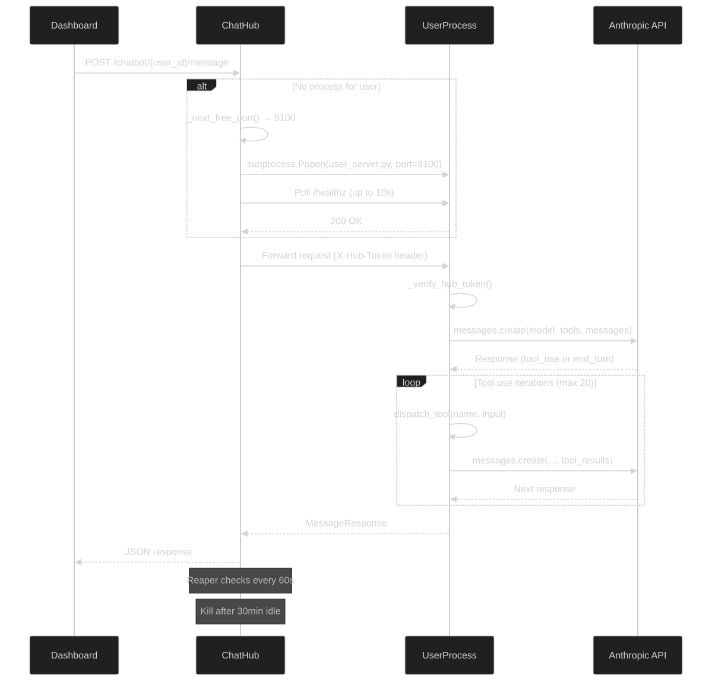
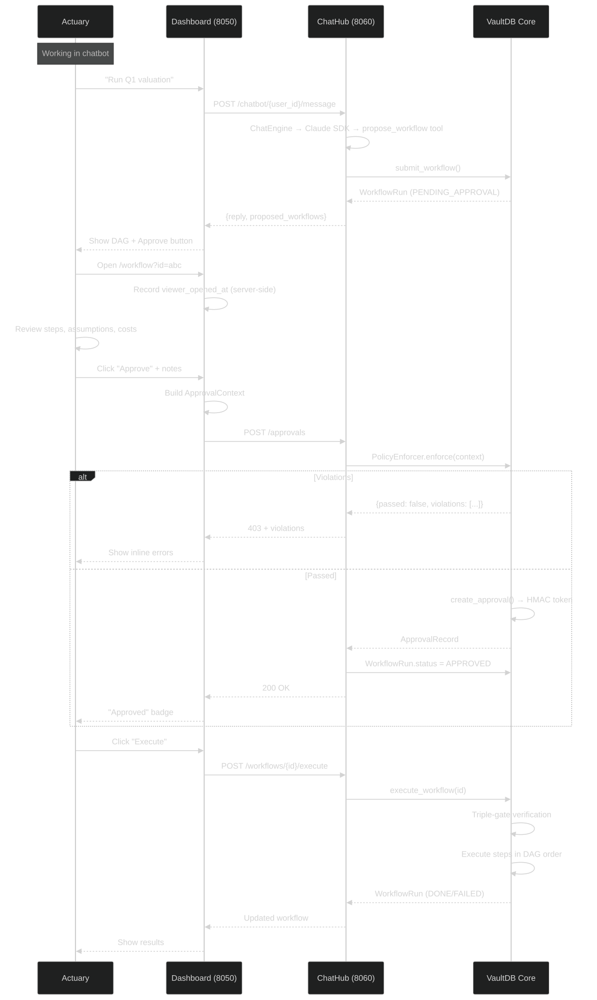

This document describes how the KRONOS Dashboard integrates with the core approval engine to enforce human-in-the-loop governance.
The reusable ApprovalPanel component (components/approval_panel.py) is embedded in the workflow viewer and can be added to any page that requires approvals.

No existing approval: - Displays approver name input (pre-filled from OIDC claims) - Notes textarea (required if policy demands) - Hidden countdown timer (shown when MinReviewTimeRule is active) - "I confirm I have reviewed..." checkbox (must be checked to enable Approve) - Approve and Reject buttons - Violations banner (hidden unless policy fails)
Valid approval exists: - Shows "Approved" badge with approver name, timestamp, and token suffix (last 8 chars) - Audit ID for cross-referencing - Revoke button
All component IDs are prefixed with a panel_id parameter to avoid conflicts when multiple panels exist on the same page.
The dedicated workflow viewer (/workflow?id={workflow_id}) provides:
When the page loads:
1. The server records viewer_opened_at in a server-side session store.
2. This timestamp is unforgeable — the client cannot manipulate it.
3. When the user clicks Approve, the policy engine compares viewer_opened_at to request_time.
4. If insufficient time has elapsed, a countdown timer is displayed.
While a workflow is RUNNING or APPROVED, the page polls for updates every few seconds:
- DAG node colors update as steps progress (PENDING → RUNNING → DONE/FAILED)
- Step inspector shows current results
- Status badge updates
Workflows are rendered as directed acyclic graphs using dash-cytoscape with dagre layout:

Clicking a node opens the step inspector showing: - Step name, task path, status - Input kwargs (with resolved references) - Output result JSON - Error message (if failed) - Timing (started_at, finished_at)
The chatbot page (/chatbot) includes inline workflow approval:

| Status | Color | Badge |
|---|---|---|
| PENDING_APPROVAL | Yellow | warning |
| APPROVED | Blue | primary |
| RUNNING | Cyan | info |
| DONE | Green | success |
| FAILED | Red | danger |
| REJECTED | Gray | secondary |